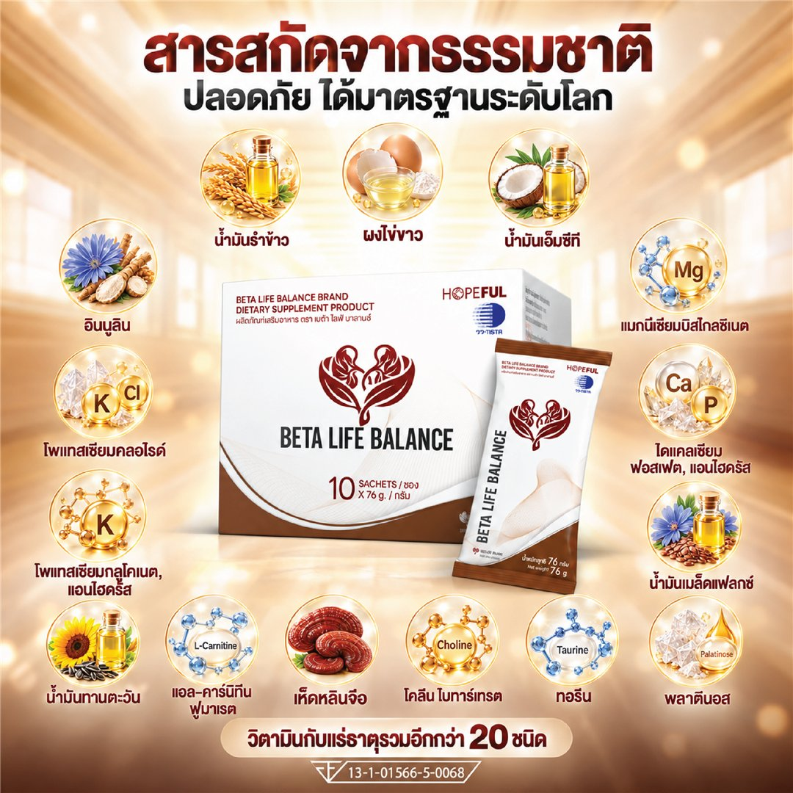

ทำไมอาหารผู้ป่วยไตถึงใช้โปรตีนไข่ขาว และต้องคุมปริมาณยังไง
เผยแพร่ 2026-11-24 · โดย Hopeful Relife
ไข่ขาวเป็นโปรตีนคุณภาพดีที่มีฟอสฟอรัสต่ำกว่าไข่แดงและนม จึงมักใช้ในอาหารผู้ป่วยไต แต่ผู้ป่วยไตแต่ละระยะต้องคุมโปรตีนไม่เท่ากัน รู้จักสินค้า HOPEFUL ที่มีผงไข่ขาว และวิธีคุยกับแพทย์
ไข่ขาวเป็นโปรตีนคุณภาพดี คือมีกรดอะมิโนจำเป็นครบ และมีฟอสฟอรัสต่ำกว่าไข่แดงและนมเมื่อเทียบที่ปริมาณโปรตีนเท่ากัน จึงมักถูกใช้ในอาหารของผู้ป่วยโรคไตที่ต้องคุมฟอสฟอรัส แต่ปริมาณโปรตีนที่เหมาะสมขึ้นกับระยะโรคและการรักษา เช่น ก่อนฟอกไตกับระหว่างฟอกไตต้องการไม่เท่ากัน ต้องให้แพทย์หรือนักกำหนดอาหารเป็นผู้กำหนด
📌 ส่วนผสมในบทความนี้อ้างอิงจากฉลากและข้อมูลสินค้าของแบรนด์ HOPEFUL ถ้ากล่องที่คุณได้รับเขียนต่างกัน ให้ยึดฉลากบนกล่องเป็นหลัก

ไข่ขาว ไข่แดง ไข่ทั้งฟอง ต่างกันยังไง
- ไข่ขาว — โปรตีนเป็นหลัก ไขมันต่ำมาก ฟอสฟอรัสต่ำ
- ไข่แดง — มีไขมัน คอเลสเตอรอล ฟอสฟอรัส และวิตามินที่ละลายในไขมัน
- ผงไข่ขาว — ไข่ขาวที่ทำแห้งเป็นผง ใช้ผสมในเครื่องดื่มหรือแคปซูล
สินค้า HOPEFUL ที่มีผงไข่ขาว
| สินค้า | รูปแบบ | ผงไข่ขาว |
|---|---|---|
| BETA LIFE | แคปซูล | 230 มก. ต่อแคปซูล |
| BETA LIFE BALANCE | อาหารสูตรครบถ้วนชนิดผง | 7.98 ก. ต่อซอง |
| LAB BALANCE | เครื่องดื่มชนิดผง | 20.83% ของน้ำหนัก |
BETA LIFE BALANCE ออกแบบให้คุมโซเดียม ฟอสฟอรัส และโพแทสเซียม แต่ก็ยังต้องนับรวมกับอาหารอื่นที่กินในวันนั้น
คุยกับแพทย์เรื่องโปรตีน ควรถามอะไร
- ตอนนี้ควรได้โปรตีนวันละกี่กรัม
- ต้องคุมฟอสฟอรัส โพแทสเซียม และโซเดียมแค่ไหน
- ดื่มอาหารสูตรครบถ้วนได้วันละกี่ซอง และนับรวมน้ำที่ดื่มอย่างไร ถ้าถูกจำกัดน้ำ
นำกล่องหรือซองไปให้แพทย์ดูข้อมูลโภชนาการได้เลย
คำถามที่พบบ่อย
ผู้ป่วยไตกินไข่ขาวได้วันละกี่ฟอง
ขึ้นกับระยะโรคและปริมาณโปรตีนที่แพทย์กำหนด ไม่มีตัวเลขเดียวที่ใช้ได้กับทุกคน
ทำไมผู้ป่วยไตต้องระวังฟอสฟอรัส
เมื่อไตทำงานลดลง ร่างกายขับฟอสฟอรัสออกได้น้อยลง แพทย์จึงมักให้คุมฟอสฟอรัสในอาหาร
แพ้ไข่กินตัวไหนได้บ้าง
BETA LIFE, BETA LIFE BALANCE และ LAB BALANCE มีผงไข่ขาว คนแพ้ไข่ไม่ควรกิน ดูตารางแพ้อาหารทุกตัว
อ่านต่อ: เบต้าไลฟ์ บาลานซ์ ชงยังไง · สัญญาณเตือนไตทำงานหนัก
💬 ทัก LINE @926xrxzj ถามทีมงานได้ฟรี
📞 หรือโทร 062-620-7877 (จันทร์–เสาร์ 08:30–17:30 น.)
บทความนี้ให้ความรู้ทั่วไปเกี่ยวกับส่วนผสม ไม่ใช่คำแนะนำทางการแพทย์ ผลิตภัณฑ์เสริมอาหารไม่ใช่ยา ไม่มีผลในการป้องกันหรือรักษาโรค ควรกินอาหารหลากหลายครบ 5 หมู่ในสัดส่วนที่เหมาะสมเป็นประจำ
อ่านข้อมูลผลิตภัณฑ์ที่เกี่ยวข้อง: BETA LIFE BALANCE (เบต้าไลฟ์ บาลานซ์)
บทความนี้มีวัตถุประสงค์เพื่อให้ความรู้ทั่วไปเท่านั้น ไม่ใช่คำแนะนำทางการแพทย์ หากมีข้อสงสัยเกี่ยวกับสุขภาพ ควรปรึกษาแพทย์หรือเภสัชกร